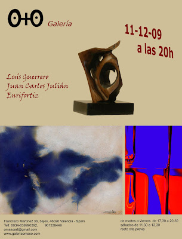
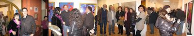

"Encuentros": Exposición del 11-12-2009 a 11-01-2010
viernes, 11 de diciembre de 2009

Encuentros...



{kind=link}
{kind=link}
ENRIFORTIZ
… Entre la ternura y la violencia, entre el dramatismo y la sensualidad, el objetivo de ENRIFORTIZ es apuntar a un mundo lleno de matices, tan complejo como apasionante.
Su obra sugiere apariencias, en vez de contar historias, intenta captar la fugacidad y la metamorfosis de la naturaleza, mostrando sutiles matizaciones de la luz y el espacio, después de haber encontrado su propio lenguaje en plena efervescencia vanguardista.
Para ENRIFORTIZ no hay realidad completa, como no hay abstracción absoluta. Él intenta llegar, tocar los límites cerrados que hasta ahora dominaban el arte de la fotografía; y los supera evitando la oscuridad, concediendo especial protagonismo a su espacio interior.
Genio espontáneo y creativo donde los haya. La extraordinaria rareza y seducción de sus obras, nos invitan seguro a una consideración repleta de fantasía, testimonio de lo inasible.
Genio espontáneo y creativo donde los haya. La extraordinaria rareza y seducción de sus obras, nos invitan seguro a una consideración repleta de fantasía, testimonio de lo inasible.
Formado en el contexto de la estética modernista y en el revelador ambiente de las vanguardias, conduce gracias a sus experimentos un lenguaje propio, en el que podemos admirar los logros de este personal y genial investigador, además de renovador del arte…
LUIS GUERRERO
… La materia es fundamental en su discurso escultórico, pero, como símbolo de la vida, de la existencia, porque es tangible. Aunque su opinión respecto de la materia se fundamenta en un discurso espacial, en el sentido que todo está interrelacionado en unas coordenadas precisas, en las que lo fundamental es la necesidad de avanzar más allá de sus límites.
Es más, a partir del volumen, se requiere unas circunstancias de espacio y tiempo, para definir la idea, desarrollar el proyecto, actuando mucho más allá de los límites que lo caracterizan.El espacio permite el desarrollo de los sentidos y la capacidad de ser uno mismo. De ahí que sus esculturas sean terrenales, basadas en la tierra, dado que surgen de la propia consideración del hálito vital. Su dimensión es terráquea, pero sus pretensiones van más allá de sus límites materiales, porque en la materia está la forma, siendo esta la expresión de la idea, que se halla en la conciencia, en los límites energéticos, en la linde que nos acompaña a todos hacia la consecución de lo previsto pero no delimitado de antemano.
Orgánico pero trascendente, humanista, expresivo, se desprende de detalles para profundizar en la expresividad natural, para ir más allá de los límites previstos y convertir en poesía su disciplina escultórica.
JUAN CARLOS JULIAN
…Existe una evolución en la obra de Juan-Carlos Julián Cebrián, en la que lo abstracto va ganando terreno a la pintura figurativa. Sus paisajes donde vemos representados el sol de los amaneceres, las nubes transportadas por el viento, las olas del mar o los cielos nublados… se van acercando poco a poco a una abstracción con tintes expresionistas.
Para ello el artista valenciano toma sólo un fragmento de la realidad, una porción abstracta del paisaje, como pueden ser el mar, la lluvia o un remolino. Y la representa tal cual la siente y concibe. Otras veces, da un paso más y deja a un lado cualquier referencia figurativa creando manchas y texturas de tierra y agua, dando paso a una tormenta de color. Abstrae un objeto o varios de la realidad hasta simplificarlos y reducirlos a una simple figura. Ofreciéndonos la representación de su "paisaje" interior. En este viaje desde lo figurativo al expresionismo abstracto, las formas representadas que no tienen relación directa con la realidad, hacen alusión en gran parte a las fuerzas de la naturaleza. Dejar de un lado la necesidad de una representación figurativa y sustituirla por un lenguaje abstracto, dota a sus obras de sus propios significados.
Un lenguaje elaborado a partir de sus experiencias y emociones que exalta la fuerza del color…